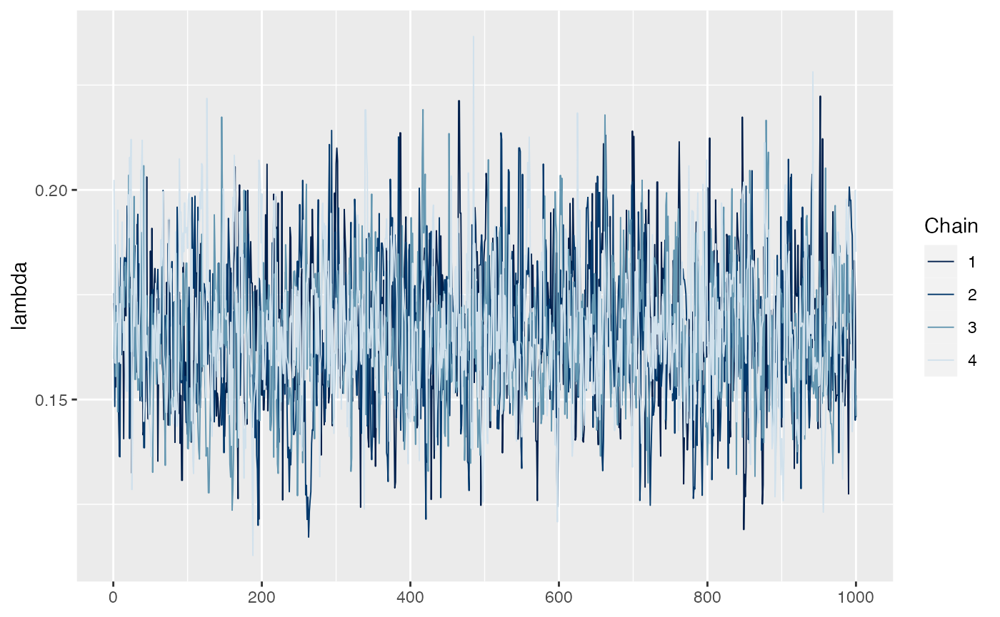

Serocatalytic Model Family
James Hay, Isobel Routledge and Saki Takahashi
2023-12-14
Source:vignettes/serocatalytic_model.Rmd
serocatalytic_model.RmdSerocatalytic models
Introduction
Serocatalytic models are used to model and infer the Force of Infection (FOI), which is the per capita rate (per year) that susceptible individuals are exposed to infection, from cross - sectional serological surveys
The simplest catalytic model assumes:
- Force of Infection is constant between ages and over time
- No sero-reversion (loss of seropositivity after infection)
- No boosting of antibody response
- No cross-reactivity
- Stable population size and characteristics
Under this model, the rate of change of susceptible individuals (\(S\)) with age (\(a\)) is expressed as
\[ \frac{dS}{dt} = -\lambda S(a) \] where \(\lambda\) is the constant FOI.
The proportion of the population seropositive at age \(a\), \(P_{a}\) can be given as \[ P_{a}= 1-exp(-\lambda a) \]
Note either age (\(a\)) or time (\(t\)) could be used in the example above. Here we define seropositive as individuals whose serum gave an ELISA value above the normal range for serum from nonexposed individuals.
Variables required
Minimum variables required for this model to identify the population wide FOI would be the proportion seropositive by age group. Additionally, having seropositivity at multiple timepoints can allow an assessment of changes in FOI over time. Differences in FOI between sub-populations or demographic groups can also be measured using serocatalytic models (see Table 1)
| Use case | Minimum variables |
|---|---|
| Population-wide FOI | proportion seropositive, age |
| Age-specific FOI | proportion seropositive, age |
| Changes in FOI over time | proportion seropositive, age, time |
| Changes in FOI in different populations | proportion seropositive, age, time, population |
Example: Fitting a basic serocatalytic model in Stan
For this example, we are fitting to a dataset from the book “Epidemics: Models and Data using R” by Ottar Bjornstad, Chapter 4-3. We can see that we have age bands, the median age within that band, the number of samples in that band, the number positive and negative, and the seroprevalence in that age band (f). For this example we will subset the data, excluding the <1, 40-49 and 50+ brackets.
## For now, fit to data from "Epidemics: Models and Data using R" by Ottar Bjornstad, Chapter 4-3
library(epimdr)
FALSE Loading required package: shiny
FALSE Loading required package: deSolve
FALSE Loading required package: polspline
library(rstan)
FALSE Loading required package: StanHeaders
FALSE Loading required package: ggplot2
FALSE rstan (Version 2.21.8, GitRev: 2e1f913d3ca3)
FALSE For execution on a local, multicore CPU with excess RAM we recommend calling
FALSE options(mc.cores = parallel::detectCores()).
FALSE To avoid recompilation of unchanged Stan programs, we recommend calling
FALSE rstan_options(auto_write = TRUE)
library(bayesplot)
FALSE This is bayesplot version 1.10.0
FALSE - Online documentation and vignettes at mc-stan.org/bayesplot
FALSE - bayesplot theme set to bayesplot::theme_default()
FALSE * Does _not_ affect other ggplot2 plots
FALSE * See ?bayesplot_theme_set for details on theme setting
data(black)
## Subsetting to specific age brackets
b2 <- black[-c(1,8,9),]
knitr::kable(b2)| age | mid | n | pos | neg | f | |
|---|---|---|---|---|---|---|
| 2 | 1-4 | 2.5 | 21 | 4 | 17 | 0.1904762 |
| 3 | 5-9 | 7.0 | 41 | 31 | 10 | 0.7560976 |
| 4 | 10-14 | 12.0 | 52 | 50 | 2 | 0.9615385 |
| 5 | 15-19 | 17.0 | 30 | 28 | 2 | 0.9333333 |
| 6 | 20-29 | 25.0 | 38 | 37 | 1 | 0.9736842 |
| 7 | 30-39 | 35.0 | 51 | 49 | 2 | 0.9607843 |
Next we get just the maximum likelihood estimate for Force of Infection.
## [1] MLE method to estimate FOI
fit <- glm(cbind(pos,neg) ~ offset(log(mid)), family=binomial(link="cloglog"), data=b2)
exp(fit$coef)
FALSE (Intercept)
FALSE 0.1653329
## Plot predicted and observed
phi <- exp(coef(fit))
curve(1-exp(-phi*x), from=0, to=60, ylab="Seroprevalence", xlab="Age")
points(black$mid, black$f, pch="*", col="red")
points(b2$mid, b2$f, pch=8)
Now we try the stan version, implementing the FOI (lambda parameter) inference using MCMC
## [2] Fit this model in Stan
fit_Stan <- stan(file="model_serocatalytic.stan",
data=list(AGE_GROUPS = nrow(b2),
age_mid = b2$mid,
N = b2$n,
n_seropos = b2$pos))
FALSE
FALSE SAMPLING FOR MODEL 'model_serocatalytic' NOW (CHAIN 1).
FALSE Chain 1: Rejecting initial value:
FALSE Chain 1: Log probability evaluates to log(0), i.e. negative infinity.
FALSE Chain 1: Stan can't start sampling from this initial value.
FALSE Chain 1: Rejecting initial value:
FALSE Chain 1: Log probability evaluates to log(0), i.e. negative infinity.
FALSE Chain 1: Stan can't start sampling from this initial value.
FALSE Chain 1:
FALSE Chain 1: Gradient evaluation took 2e-05 seconds
FALSE Chain 1: 1000 transitions using 10 leapfrog steps per transition would take 0.2 seconds.
FALSE Chain 1: Adjust your expectations accordingly!
FALSE Chain 1:
FALSE Chain 1:
FALSE Chain 1: Iteration: 1 / 2000 [ 0%] (Warmup)
FALSE Chain 1: Iteration: 200 / 2000 [ 10%] (Warmup)
FALSE Chain 1: Iteration: 400 / 2000 [ 20%] (Warmup)
FALSE Chain 1: Iteration: 600 / 2000 [ 30%] (Warmup)
FALSE Chain 1: Iteration: 800 / 2000 [ 40%] (Warmup)
FALSE Chain 1: Iteration: 1000 / 2000 [ 50%] (Warmup)
FALSE Chain 1: Iteration: 1001 / 2000 [ 50%] (Sampling)
FALSE Chain 1: Iteration: 1200 / 2000 [ 60%] (Sampling)
FALSE Chain 1: Iteration: 1400 / 2000 [ 70%] (Sampling)
FALSE Chain 1: Iteration: 1600 / 2000 [ 80%] (Sampling)
FALSE Chain 1: Iteration: 1800 / 2000 [ 90%] (Sampling)
FALSE Chain 1: Iteration: 2000 / 2000 [100%] (Sampling)
FALSE Chain 1:
FALSE Chain 1: Elapsed Time: 0.005673 seconds (Warm-up)
FALSE Chain 1: 0.006154 seconds (Sampling)
FALSE Chain 1: 0.011827 seconds (Total)
FALSE Chain 1:
FALSE
FALSE SAMPLING FOR MODEL 'model_serocatalytic' NOW (CHAIN 2).
FALSE Chain 2:
FALSE Chain 2: Gradient evaluation took 5e-06 seconds
FALSE Chain 2: 1000 transitions using 10 leapfrog steps per transition would take 0.05 seconds.
FALSE Chain 2: Adjust your expectations accordingly!
FALSE Chain 2:
FALSE Chain 2:
FALSE Chain 2: Iteration: 1 / 2000 [ 0%] (Warmup)
FALSE Chain 2: Iteration: 200 / 2000 [ 10%] (Warmup)
FALSE Chain 2: Iteration: 400 / 2000 [ 20%] (Warmup)
FALSE Chain 2: Iteration: 600 / 2000 [ 30%] (Warmup)
FALSE Chain 2: Iteration: 800 / 2000 [ 40%] (Warmup)
FALSE Chain 2: Iteration: 1000 / 2000 [ 50%] (Warmup)
FALSE Chain 2: Iteration: 1001 / 2000 [ 50%] (Sampling)
FALSE Chain 2: Iteration: 1200 / 2000 [ 60%] (Sampling)
FALSE Chain 2: Iteration: 1400 / 2000 [ 70%] (Sampling)
FALSE Chain 2: Iteration: 1600 / 2000 [ 80%] (Sampling)
FALSE Chain 2: Iteration: 1800 / 2000 [ 90%] (Sampling)
FALSE Chain 2: Iteration: 2000 / 2000 [100%] (Sampling)
FALSE Chain 2:
FALSE Chain 2: Elapsed Time: 0.005865 seconds (Warm-up)
FALSE Chain 2: 0.005703 seconds (Sampling)
FALSE Chain 2: 0.011568 seconds (Total)
FALSE Chain 2:
FALSE
FALSE SAMPLING FOR MODEL 'model_serocatalytic' NOW (CHAIN 3).
FALSE Chain 3: Rejecting initial value:
FALSE Chain 3: Log probability evaluates to log(0), i.e. negative infinity.
FALSE Chain 3: Stan can't start sampling from this initial value.
FALSE Chain 3: Rejecting initial value:
FALSE Chain 3: Log probability evaluates to log(0), i.e. negative infinity.
FALSE Chain 3: Stan can't start sampling from this initial value.
FALSE Chain 3:
FALSE Chain 3: Gradient evaluation took 4e-06 seconds
FALSE Chain 3: 1000 transitions using 10 leapfrog steps per transition would take 0.04 seconds.
FALSE Chain 3: Adjust your expectations accordingly!
FALSE Chain 3:
FALSE Chain 3:
FALSE Chain 3: Iteration: 1 / 2000 [ 0%] (Warmup)
FALSE Chain 3: Iteration: 200 / 2000 [ 10%] (Warmup)
FALSE Chain 3: Iteration: 400 / 2000 [ 20%] (Warmup)
FALSE Chain 3: Iteration: 600 / 2000 [ 30%] (Warmup)
FALSE Chain 3: Iteration: 800 / 2000 [ 40%] (Warmup)
FALSE Chain 3: Iteration: 1000 / 2000 [ 50%] (Warmup)
FALSE Chain 3: Iteration: 1001 / 2000 [ 50%] (Sampling)
FALSE Chain 3: Iteration: 1200 / 2000 [ 60%] (Sampling)
FALSE Chain 3: Iteration: 1400 / 2000 [ 70%] (Sampling)
FALSE Chain 3: Iteration: 1600 / 2000 [ 80%] (Sampling)
FALSE Chain 3: Iteration: 1800 / 2000 [ 90%] (Sampling)
FALSE Chain 3: Iteration: 2000 / 2000 [100%] (Sampling)
FALSE Chain 3:
FALSE Chain 3: Elapsed Time: 0.005761 seconds (Warm-up)
FALSE Chain 3: 0.005163 seconds (Sampling)
FALSE Chain 3: 0.010924 seconds (Total)
FALSE Chain 3:
FALSE
FALSE SAMPLING FOR MODEL 'model_serocatalytic' NOW (CHAIN 4).
FALSE Chain 4:
FALSE Chain 4: Gradient evaluation took 5e-06 seconds
FALSE Chain 4: 1000 transitions using 10 leapfrog steps per transition would take 0.05 seconds.
FALSE Chain 4: Adjust your expectations accordingly!
FALSE Chain 4:
FALSE Chain 4:
FALSE Chain 4: Iteration: 1 / 2000 [ 0%] (Warmup)
FALSE Chain 4: Iteration: 200 / 2000 [ 10%] (Warmup)
FALSE Chain 4: Iteration: 400 / 2000 [ 20%] (Warmup)
FALSE Chain 4: Iteration: 600 / 2000 [ 30%] (Warmup)
FALSE Chain 4: Iteration: 800 / 2000 [ 40%] (Warmup)
FALSE Chain 4: Iteration: 1000 / 2000 [ 50%] (Warmup)
FALSE Chain 4: Iteration: 1001 / 2000 [ 50%] (Sampling)
FALSE Chain 4: Iteration: 1200 / 2000 [ 60%] (Sampling)
FALSE Chain 4: Iteration: 1400 / 2000 [ 70%] (Sampling)
FALSE Chain 4: Iteration: 1600 / 2000 [ 80%] (Sampling)
FALSE Chain 4: Iteration: 1800 / 2000 [ 90%] (Sampling)
FALSE Chain 4: Iteration: 2000 / 2000 [100%] (Sampling)
FALSE Chain 4:
FALSE Chain 4: Elapsed Time: 0.005759 seconds (Warm-up)
FALSE Chain 4: 0.005562 seconds (Sampling)
FALSE Chain 4: 0.011321 seconds (Total)
FALSE Chain 4:
## Look at output
fit_Stan
FALSE Inference for Stan model: model_serocatalytic.
FALSE 4 chains, each with iter=2000; warmup=1000; thin=1;
FALSE post-warmup draws per chain=1000, total post-warmup draws=4000.
FALSE
FALSE mean se_mean sd 2.5% 25% 50% 75% 97.5% n_eff Rhat
FALSE log_lambda -1.80 0.00 0.10 -1.99 -1.86 -1.80 -1.73 -1.61 1589 1
FALSE lambda 0.17 0.00 0.02 0.14 0.15 0.17 0.18 0.20 1581 1
FALSE lp__ -70.29 0.02 0.66 -72.10 -70.46 -70.04 -69.86 -69.81 1525 1
FALSE
FALSE Samples were drawn using NUTS(diag_e) at Thu Dec 14 11:53:42 2023.
FALSE For each parameter, n_eff is a crude measure of effective sample size,
FALSE and Rhat is the potential scale reduction factor on split chains (at
FALSE convergence, Rhat=1).
mcmc_trace(fit_Stan, pars="lambda")
mcmc_areas(fit_Stan, pars="lambda")The stan model looks like this:
data {
int<lower=0> AGE_GROUPS;
vector[AGE_GROUPS] age_mid;
int<lower=0> N[AGE_GROUPS];
int<lower=0> n_seropos[AGE_GROUPS];
}
parameters {
// log FOI
real log_lambda;
}
transformed parameters {
// FOI
real<lower=0.0> lambda;
lambda = exp(log_lambda);
}
model {
for(a in 1:AGE_GROUPS) n_seropos[a] ~ binomial(N[a], 1.0-exp(-lambda*age_mid[a]));
}Extension 1- Time or age-varying FOI
If FOI is not assumed to be constant and varies by age or time (for example due to the introduction of a new intervention), then multiple \(\lambda\) values may need to be estimated
Discrete age varying FOI \[ P_{a,\tau} = 1-exp( -[ \lambda_{1}(a-(\tau - \gamma_{1}))+\lambda_{2}(\tau - \gamma_{2})]) \]
Seasonally varying FOI \[ P_{a,\tau} = 1-exp (\sum_{i = \tau - a +1 }^{i= \tau} \lambda_{i} ) \]
Extension 2 - Seroreversion
In many infectious diseases, antibody response will wane over time to the point that individuals who were previously infected may be seronegative. To account for this, we use what is called a reverse serocatalytic model which includes a seroreversion parameter,\(ρ\).
- Seroconversion rate,\(λ\) , mean annual rate of seroconversion (negative to positive)
- Seroreversion rate, \(ρ\), mean annual rate of seroreversion(positive to negative) \(1/ρ\) is the antibody persistence duration in years
From this, the proportion seropositive at age \(a\) is expressed as
\[ P_{a}=\frac{λ}{ λ +ρ}(1−exp(−a(λ+ρ)) \]